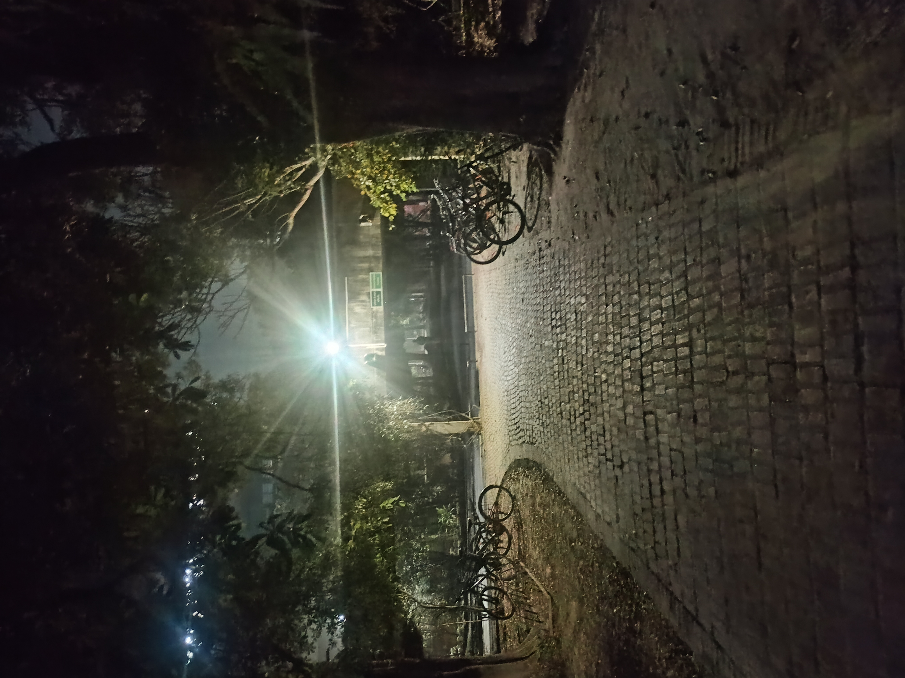
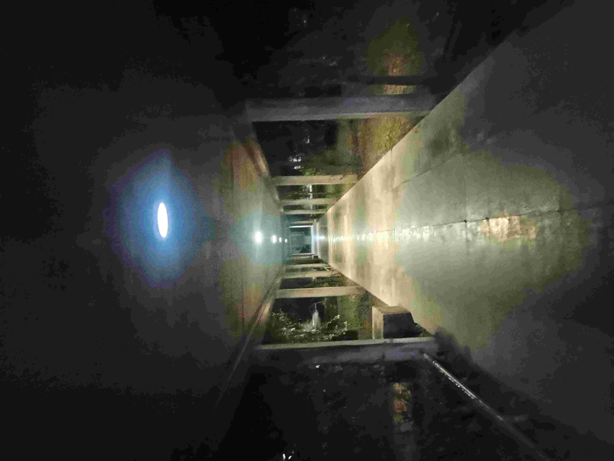

Some (poor) photography
Not a photographer or even a hobbyist by any stretch of the imagination, but I do enjoy capturing some sights on occasion with my rather poor phone camera. I'll put some of the more interesting ones here, and hopefully I remember to keep updating it.

In full bloom.

A deserted (yet inviting) path in the IITK campus around evening.

A rather peculiar looking swan.

My hostel premesis cosplaying as a zone from Silent Hill.

A liminal hallway.

দু মক্কেল